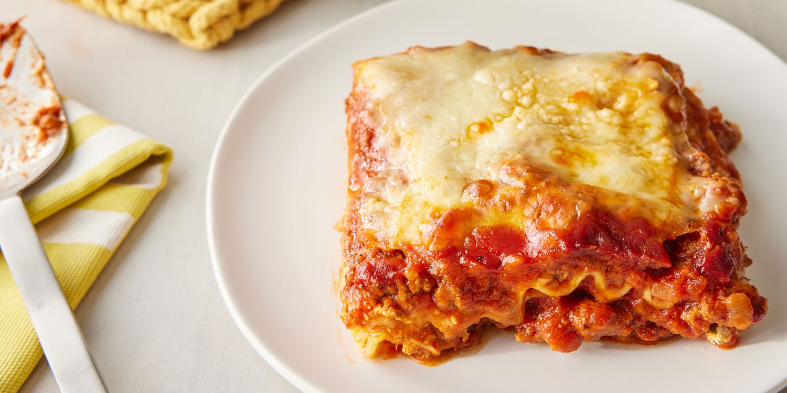

Lasagna

How to make lasagna
Making lasagna can be time-consuming, but the results are well worth the wait.
You'll find a detailed ingredient list and step-by-step instructions in the recipe below, but let's go over the basics:
Lasagna ingredients
The Allrecipes community adores this lasagna recipe because it's incredibly customizable, so you can easily alter the ingredient list to suit your needs.
If you want to stay true to the original recipe, though, these are the ingredients you'll need to add to your grocery list:
- Meat:
This super meaty lasagna has sweet Italian sausage and lean ground beef.
- Onion and garlic:
An onion and two cloves of garlic are cooked with the meat to add tons of flavor.
- Tomato products:
You'll need a can of crushed tomatoes, two cans of tomato sauce, and two cans of tomato paste.
- Sugar:
Two tablespoons of white sugar add subtle sweetness and enhance the flavor of the sauce.
- Spices and seasonings:
This lasagna recipe is flavored with fresh parsley, dried basil leaves, salt, Italian seasoning, fennel seeds, and black pepper.
- Lasagna noodles:
Use store-bought or homemade lasagna noodles.
- Cheeses:/li>Parmesan, mozzarella, and ricotta cheese make this lasagna extra decadent.
- Egg:/li>An egg helps bind the ricotta so it doesn't ooze out of the lasagna when you cut into it.